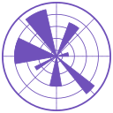
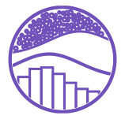

Python
Olá, meu nome é Ramon Barbosa e sou
Desenvolvedor de Software
Estou sempre em busca de oportunidades para aprender e colaborar em projetos desafiadores, para aperfeiçoar cada vez mais minhas habilidades. Vamos conversar e descobrir como posso colaborar em seu projeto!
Flask
FastAPI
LangChain
Pandas

PyPlot

Seaborn
Matplotlib
Machine Learning
RAG
Node
TypeScript
Express
React
Vite
PostgreSQL
MongoDB
QDrant
Docker
Linux
Git
GitHub
GitHub Actions
GitLab
PyTest
Jest
Vitest
Deslize para explorar as skills

🧐 Sobre mim
Ramon Castro Barbosa
Sou desenvolvedor de software e pesquisador, graduado em Sistemas de Informação pela UNIFESSPA e mestrando em Ciência da Computação pela UFPA. Minha atuação conecta desenvolvimento web, análise de dados e inteligência artificial.
Desenvolvo APIs com Python, FastAPI e Flask e com Node, TypeScript e Express, além de interfaces com React e Vite. Trabalho com PostgreSQL, MongoDB e QDrant, testes automatizados e infraestrutura com Linux, Docker e CI/CD.
Em dados e IA, utilizo Pandas, Machine Learning, LangChain e RAG — geração de respostas com apoio de informações recuperadas de uma base de conhecimento. Versiono e colaboro em projetos com Git, GitHub e GitLab.
Gosto de trabalhar entre áreas: colaboro em projetos de educação, psicologia, ciência política e agricultura, aproximando a computação das perguntas e necessidades de cada contexto.
Pesquisa e colaboração
Educação · IA
Psicologia · Tecnologia
Ciência política · Amazônia
Agricultura · IA · Internet das Coisas
Conheça minha trajetória e formação
Computação em diálogo com outras áreas
Minha trajetória reúne pesquisa, desenvolvimento e ensino. Colaboro com equipes de diferentes áreas para construir soluções orientadas ao contexto de cada projeto.
LogiBots.AI
Pesquisa PIBIT em uma plataforma de conversação para avaliação automatizada de habilidades em lógica de programação, em 2024–2025. Em 2026, atuação em análise de dados e desenvolvimento de IA no projeto LogiBots: RAGAs.
UNIFESSPAPAPSE
Desenvolvimento back-end e DevOps voluntário no Programa de Acompanhamento Psicológico Estudantil, em 2026, conectando engenharia de software a um projeto da área de psicologia.
UNIFESSPAPOAM
Desenvolvimento front-end no projeto Políticas Públicas na Amazônia, em 2026. Uma colaboração entre tecnologia e a área de políticas públicas.
UFPASMART
Pesquisa e desenvolvimento voluntário de soluções de IA, em 2026, com aplicação em cafezal. O projeto integra Internet das Coisas (IoT), sensores de campo e análise de dados para apoiar a agricultura de precisão e o uso sustentável de recursos.
Uma colaboração Brasil–China que envolve a UFABC, a Embrapa, a Shenzhen Technology University (SZTU) e a Sun Yat-sen University, entre outros parceiros.
Cooperação internacional · Agricultura sustentável
Experiência e formação
Uma trajetória entre prática, ensino e pesquisa
Formação acadêmica
-
2026 — Em andamento
Mestrado em Ciência da Computação
UFPA
-
2021 — 2026 · Concluído
Graduação em Sistemas de Informação
UNIFESSPA
Experiência
-
2026 · Voluntário
Pesquisador e desenvolvedor de soluções de IA
SMART · UFABC — IA e IoT aplicadas à agricultura, em colaboração com a Embrapa e instituições chinesas, incluindo a Shenzhen Technology University.
-
2026
Desenvolvedor front-end
POAM — Políticas Públicas na Amazônia · UFPA
-
2026
Analista de dados e desenvolvimento de IA
LogiBots: RAGAs · UNIFESSPA
-
2026 · Voluntário
Desenvolvedor back-end e DevOps
PAPSE — Programa de Acompanhamento Psicológico Estudantil · UNIFESSPA
-
2025
Estagiário em desenvolvimento full stack
A3 Data
-
2024 — 2025
Pesquisador PIBIT
LogiBots.AI: Uma Plataforma de Conversação para Avaliação Automatizada de Habilidades em Lógica de Programação · UNIFESSPA
-
2023 — 2025
Desenvolvedor back-end
Conecta Canaã · ExceptionJr · UNIFESSPA
-
2023 — 2025
Desenvolvedor de aplicações web e mobile
ExceptionJr · UNIFESSPA
-
2022 — 2023
Instrutor de informática
Programa de Inclusão Digital (PID) · UNIFESSPA
-
2022 — 2023
Monitor dos laboratórios de Programação e de Redes e Segurança
UNIFESSPA
-
2021 — 2023
Monitor de Laboratório de Programação
UNIFESSPA
🔥 Projetos
Cases

LogiBots.AI
Plataforma desenvolvida para auxiliar no ensino de lógica de programação, tornando o aprendizado mais acessível e interativo.

Conecta Canaã
Sistema de monitoramento para Canaã dos Carajás, unindo o cadastro de ocorrências à manutenção ágil da infraestrutura urbana.

PAPSE
Plataforma desenvolvida para auxiliar alunos da UNIFESSPA, com acompanhamento psicolpogico.

POAM
Projeto de divulgação de produções acadêmicas e eventos do grupo de pesquisa POAM - Políticas Públicas na Amazônia.